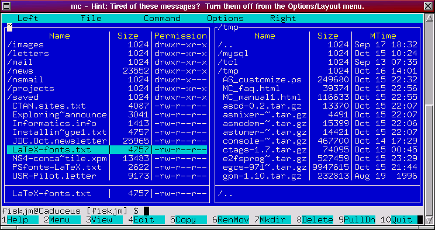
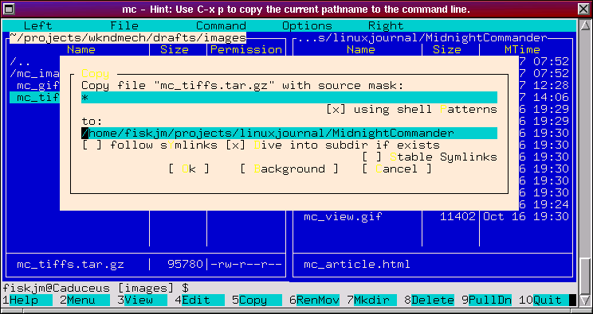
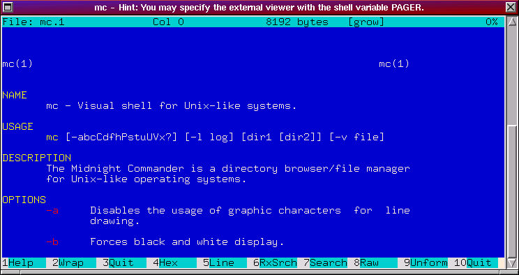
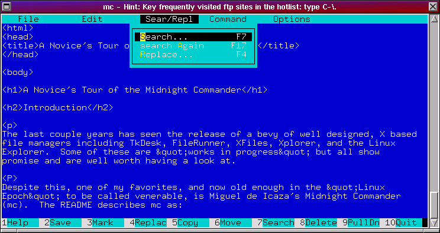
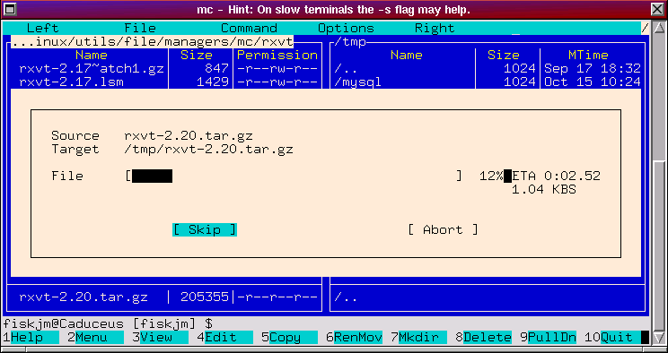

Abstract
The Midnight Commander is a directory browsing and file manipulation program that provides a flexible, powerful, and convenient set of file and directory operations. It is capable of running in either a console or an xterm under X11; mouse support is native under X11 and is provided by the gpm mouse server when used in a Linux console. A sophisticated Virtual File System (VFS) supports directory-like browsing and file operations for a variety of common archive formats as well as FTP and network connections. Its basic operation is easily mastered by the novice while providing a rich feature set and extensive customization.
The last couple years has seen the release of a bevy of well designed, X based file managers including FileMan, FileRunner, Linux Explorer, TkDesk, X-Files, and Xplorer to name a few. Some of these are "works in progress" but all show promise and are well worth having a look at.
Despite this, one of my favorites, and now old enough in the "Linux Epoch" to be called venerable, is Miguel de Icaza's Midnight Commander (mc). The README describes mc as:
Its stability, ease of use, flexibility, and rich feature set make it quite a powerful tool. Its simplicity makes it easy for novices to quickly master the basics. Among the capacities it boasts are:a free Norton Commander Clone with many useful features... The Midnight Commander is a directory browsing tool which bears a certain remote resemblance to John Socha's Norton Commander for DOS.
The manual page for mc is well over 50 pages in length, giving some indication of its complexity. In this short article I won't be able to cover mc in this depth, but will try to touch on the basics: getting the sources, compiling and installation, and basic use and features. This is probably best read while sitting at your computer and experimenting with the various features as you go. Let's start by compiling and installing mc.
Sources and precompiled binaries are available at a number of locations including the canonical GNU FTP archive prep.ai.mit.edu/pub/gnu/ and the sunsite FTP archive at sunsite.unc.edu/pub/Linux/utils/file/managers/mc/. The official web page is http://mc.blackdown.org/mc/ where the most recent public and development releases may also be found. There are, additionally, mailing lists for both users and developers to which you can subscribe from this site.
In addition, most Linux distributions including Debian, RedHat, Slackware, and their derivatives provide precompiled packages in *.deb, *.rpm, or *.tgz formats. If you feel a bit shaky at the prospect of compiling your own programs, or are in a hurry to get going, then these provide an easy means of obtaining and installing mc. Check the documentation that came with your distribution as to the specifics of using the package management system they provide. At a minimum you could try:
$ installpkg mc-xxx.tgz -OR- $ rpm -i mc-xxx.rpmfor Slackware or RedHat based systems in which "mc-xxx.{tgz,rpm}" is the name of the package.
In the pioneering spirit of Linux's "Do It Yourself And Learn", I'd like to suggest that you compile and install mc from its sources. It's not that difficult and if you've not done much of this then mc is an ideal program on which to start since it is quite well behaved.
For the purposes of this article I'll be using mc version 4.1.5 which is the most current at the time of this writing. If you ftp the sources from sunsite or one of its mirrors then you might also want to retrieve a couple other useful packages that support mc: the rxvt X window terminal, Allesandro Rubini's gpm mouse server, and Theodore T'so and Remy Card's e2fsprogs package which allows file undelete capacity to be compiled into mc. All of these are available at sunsite or its mirrors in the /pub/Linux/utils/file/managers/mc/ directory.
In this section, I'll assume that you've gotten the *.tar.gz source file, that you'll unarchive the sources into /usr/src, and that you'll install mc and its support files under /usr/local. You can obvious compile and install mc in any directory you wish: just change the pathnames to suit your preferences. To unarchive the sources do:
$ cd /usr/src $ tar -xvzf /path/to/mc-4.1.5.tar.gzin which "/path/to/mc-4.1.5.tar.g" is the path to the source file -- i.e., if you downloaded the file to your home directory you'd use:
$ tar -xvzf ~/mc-4.1.5.tar.gzThis assumes that you're using the GNU version of tar which handles gzipped files using the "-z" option. If you are using a different version of tar you can also do:
$ gzip -dc /path/to/mc-4.1.5.tar.gz | tar -xvf -
After unarchiving the file change to the mc-4.1.5 directory where you'll find both the sources and program documentation. The mc distribution comes with two files outlining the installation process: INSTALL and INSTALL.FAST. If you're not used to compiling programs from source then read INSTALL.FAST which gives a concise explanation of the process as well as options that you can use to customize where mc gets installed and what features it includes. If you're a bit more adventurous, then have a look at the INSTALL document which goes into a good deal more detail. For our purposes, I'll go through the process of compiling mc with Virtual File System, SLang, and gpm mouse support (which is very little work since these are the defaults). We'll install the mc executable under /usr/local/bin and its support files under /usr/local/lib/mc. You should log in as root in order to compile and install mc.
As with many other GNU programs, mc uses an autoconf script to detect the various features of your system and then create the needed makefiles. This greatly simplifies the build process. An additional feature that this supports is the ability to declare compilation options such as what features to include and where the program will be installed. Both INSTALL and INSTALL.FAST give a listing of these features. We'll use:
$ ./configure --prefix=/usr/local --with-slang > configure.log 2>&1 & $ tail -f configure.logThe mc configure script defaults to compiling in SLang, mouse, and X Window support (so the --with-slang option wasn't really necessary). So as to have a record of what happened use > configure.log 2>&1 which saves all the output to configure.log. Use tail -f configure.log to view the log file as the configure script progresses. When configure is finished it prints a summary of the features and compile options that will be used. Use Control-C to exit out of tail.
If there were no error messages (and there should be none) then compiling and installing is as simple as:
$ make $ make installIf you want to create a log file of the build and installation process you can use:
$ make > make.log 2>&1 & $ tail -f make.log $ make install > install.log 2>&1 & $ tail -f install.log
And that should do it! To ensure that mc was installed properly type:
$ mc -V Midnight Commander 4.1.5 with mouse support on xterm and the Linux console. Edition: text mode Virtual File System: tarfs, extfs, ftpfs, mcfs, undelfs. With built in Editor Using system-installed S-lang library with an unknown terminal database With subshell support: as default With DUSUM command With support for background operationsThis returns version and compilation information. If you've compiled and installed the 4.1.5 version but mc -V returns a previous version then you'll need to find and uninstall or rename the previous version. If you use the bash shell, type:
$ type -a mcThis should return the paths to all mc executables. At this point, you can either use your distribution's package manager to uninstall the previous version or temporarily rename it to something like mc.old. You should now be ready to start exploring mc!
Without trying to be exhaustive I'd like to touch on the following topics:
$ echo $TERM linux (if this returns "linux" as above, then do the following:) $ export TERM=xterm $ echo $TERM xterm $ mcAt this point, you should see something like:

This main screen is similar to what you'd see at the console (the window has been sized to 80x24). It's main components are:
If you move the mouse around you should also see a pointer on the screen. If you don't see a cursor when using mc at the console then make sure that the gpm mouse server is running:
$ ps -ax | grep gpm 73 S0 S 0:00 /usr/bin/gpm -t ms 104 ? SW 0:00 (gpm-root) 5465 ? D 0:00 grep gpmIf it isn't then (assuming you're using a Microsoft-compatible serial mouse) start it using gpm -t ms. The "-t" option specifies the type of mouse; if you're using a different kind of mouse then consult the gpm manual page for the command line option to use.
To activate one of the menus you can either click on it with the mouse or hit the F9 key and use the arrow keys to move the desired menu item. This brings up one of the important features of mc: almost all operations can be performed using either the mouse or via keystrokes. Which method you use is a matter of personal style and preference although, as we'll see in a bit, using keystrokes can be a considerable time saver especially if you are a touch typist.
The directory panels are where most of the action takes place. mc is normally run in this two-panel mode although single panel mode is also supported. The panels provide a view of two directories at once with one of them being the "current directory." Most all file operations are performed on files in this current directory (although copy, rename, and move operations default to using the non-current directory as the "target" directory). To select one directory panel simply click the mouse anywhere in the panel. You can also use the TAB key to switch the current directory from one panel to the other.
The command line at the bottom functions just as you'd expect: simply type the command to execute and mc runs it just as if you'd entered it at the shell prompt. Just above the command line is the hint line (at the console; in an xterm it uses the title bar) which displays a series of hints and suggestions.
Finally, the bottom line of the window display the function key mappings. Pressing F1 brings up the Help menu, F2 brings up the User Menu, F3 let's you view a file, and so forth. Note that clicking on any of these with the mouse results in the same action.
In addition to this main window there are a number of popup dialog boxes which are used for specific operations. I'll cover several of these shortly. For now, let's turn to issues of navigation.
One other navigation aid to keep in mind is that movement within the directory panels can be accomplished using a variety of keystrokes, many of which are modeled after the emacs text editor. These include:
Once you know how to move from one directory to another the next thing to do is learn how to perform basic file operations. But before doing that we'll need to take a quick detour.
First, we need to make a distinction between the currently selected file or directory and marked or tagged files. The currently selected file is simply the one that is highlighted in the current directory panel. If you want to delete foo.txt simply move the highlight bar to that file and hit F8 to delete it. However, if you want to delete a group of files then you'll need to tag them.
Tagging can be done in a couple ways. The simplest is to either click on the file or directory using the right mouse button or move the highlight bar to the file and hit Ctrl-t (that is, hold down the control key and hit t). In this way you can tag any number of files for copy, deletion, moving, and so forth.
If the files you want can be specified by a shell pattern (such as *.tar.gz for all the gzipped tar files or foo_??.txt for foo_01.txt, foo_02.txt, foo_03.txt, etc., then you can use the following shortcuts:
Using pathname expansion (also known as filename globbing) is a fast and powerful way to select a group of similar files. Having now selected your files, let's see what you can do with them.
Below is a short summary of the file operations. In the next section we'll look specifically at file viewing and editing. Keep in mind that while the summary below indicates the keystrokes for the various operations, all of these can be accessed using the "File" menu.

If you want to use a different directory than the one in the other panel or if you want to change the file name then you can use the to: entry box to do so.
Also, when you perform a copy (and move or delete) operation mc displays a dialog box with a progress meter indicating the progress on the current file as well as the overall progress if a set of files has been selected.
Note that at any time you can cancel an operation by hitting the Escape key twice.
Note that an "Advanced Chown" facility is available under the "File" menu. Until you're rather sure of what you're doing, this is probably best left alone.
With these basic facilities you'll be able to do a good deal of day to day file system maintenance. To round things out, though, we'll need to add a couple other features.
For example, to view a manual page (even a gzipped page!) simply select the file and hit F3. If you have the mc source distribution handy, change to the doc directory and select the mc.1 file. Hit F3 to see:

You can do similar things with HTML or mail files. In the case of HTML files it is worth noting that "viewing" the file is probably not what you expect as mc will strip out the hypertext tags leaving just the text. If you want to view an HTML file it is best to select the file and hit the RETURN key. Doing so "opens" the file and automatically executes (by default) lynx if you are at a console or netscape if you are running under X.
The internal file view allows you to view files in one of two modes: ASCII or hex. When using the file viewer you'll notice that the function keys at the bottom change to a new set which are specific to the viewer. These include:
In addition Ctrl-s and Ctrl-r can be used for normal or reverse searches. Once you've started a search, hit the letter n to find the next match. Ctrl-l will repaint the screen; Alt-r will toggle the display of a ruler.
In terms of moving around the viewer, mc has a rather egalitarian attitude and will accommodate almost any set of movement keystrokes that you've gotten used including those for emacs, less, and even some vi. Some of these are:
One very handy feature is that, if you are in View mode and hit Ctrl-f then the viewer will move to the next file in the directory and display it. In this way you can easily move through a set of files, viewing one right after the other.
The internal file editor provides a full set of editing features and can be used to edit both text and binary files up to a size of 16 megabytes. As with the Viewer, function keys have been remapped to provide common file editing functions. In addition, a popup menubar provides extensive editing operations including file insertion, save, copy, and load; block operations (copy, move, etc); search/replace functions; command macro recording and execution; and the capacity to pipe selected text through various shell commands such as indent or fmt. When not active, the menubar is hidden and file information is displayed in the topmost line. Here's a screen dump of the editor in action:

Both the internal Viewer and Editor are designed to be fast and easy to use. You may, however, wish to use an external viewer (such as more, less, or most) or editor. To do so, you'll need to set your PAGER and EDITOR environment variables to the appropriate program and then use the Options->Configuration menu to unselect "use internal edit" or "use internal view". If you were using the bash shell and wanted to set the pager to "less" and the editor to "emacs", then use something like:
$ export PAGER=less $ export EDITOR=emacs
To make this change permanent you'd probably want to add these lines to your ~/.bashrc or ~/.bash_profile file. Having looked at the basic file operations let's return to mc itself and take a look at some of its other features.
As previously noted, you can quickly switch from one panel to the other using the TAB key (or Ctrl-i). You can also swap panels using Ctrl-u; note that the currently active directory panel does not change. Use Ctrl-r to refresh the directory display.
To change the sort order of the files being displayed, use the (Left|Right)->Sort Order... menu item. This allows you to sort files by name, size, various time stamps, inode number, and so forth. You can also specify whether sorting should be case (in)sensitive or reversed. Sorting by size is very useful when trying to cull out files to recover disk space; sorting by date is useful when you are searching for a recently installed, created, or modified file in a directory with many files or are looking for ancient files that can safely be warehoused.
As with sorting, use the (Left|Right)->Filter... menu item to filter the directory listing using shell patterns. For instance, suppose that you wanted a listing containing only files with a .c extension. In the Filter dialog simply enter "*.c" and all other files are removed from the listing. This is very useful when you wish to work with only a subset of files in a directory in an uncluttered setting.
You can also cycle from two-panel to single-panel modes using Alt-t. This is particularly useful when you need to see the full directory information for a particular file. Note that you can also use the (Left|Right)->Listing Mode... menu item to customize what file information the panel lists. In addition, resize the panels using the Options->Layout... menu item. This allows you to split the panels either vertically or horizontally as well as set the number of columns for each panel using the ">" and "<" keys.
One final shortcut to be aware of is Alt-o which makes use of both panels: by selecting a directory in the active panel and hitting Alt-o, its directory listing is displayed in the other panel. Hitting Alt-o repeatedly lets you quickly preview through a series of directories.
Another powerful feature of mc is its ability to handle a multitude of archive types: this feature alone makes it a "must have" utility!
VFS refers to the "Virtual File System" which mc implements. It is a powerful abstraction that allows you to view archives as though they were a directory: all the basic file manipulation operations can then be applied. The VFS file system handles an extraordinary number of archive types including tar, gzipped or compressed tar, RedHat's rpm package archives, Debian's deb package archives, gzip, zip, zoo, cpio, rar, and lha.
To use it either select the file and hit RETURN or double click on the file. It's contents are then displayed as a directory listing. Navigation through the archive is the same as you'd use for a directory. This is a very useful feature when you need a single file or set of files from an archive. Note that if the archive is a compressed single file -- i.e., a gzip, zip, zoo, or lha compressed file -- then it is uncompressed and displayed.
The VFS also supports its own FTP capacity which allows you to transparently manipulate files via FTP as though they were local to your machine. To log into an FTP server use the (Left|Right)->FTP Link... menu item and enter the URL or simply enter cd ftp://"URL" at the command line. For example, to ftp to the Linux Incoming directory at sunsite you would enter:
$ cd ftp://sunsite.unc.edu/pub/Linux/Incoming/The hintbar at the console or the title bar under X will display progress information (e.g., logging in, retrieving directory listings, and so forth). You can now view and copy files just as you would using ftp. On file transfer (use F5 to "Copy" the file to your local machine) a progress meter displays percent transfer completed, ETA (estimated time of arrival), transfer rate, and the now commonplace "stalled" flag. Use the Options->Virtual FS... menu item to customize the VFS features such as anonymous login name and so forth.

Note that mc also provides FTP service via a proxy server as well as network VFS. Having no experience with either of these I'll defer comment and simply refer you to mc's manual page if you are interested.
In this last section let's look at a few more shortcuts and suggestions for using mc effectively.
A number of popups are built into mc that considerably speed up various operations. These include:
If you use mc as an ftp client then you can use the directory hotlist to keep the URL's for your frequented sites! To edit (add, modify, or delete entries) the list type in Ctrl-\ and then use "New Entry" to create a new entry: enter the URL for the site, including the path to the directory that you're interested in and then fill in the alias. Now, anytime that you need to ftp just popup the hotlist and select the site!
Alternatively, if you were looking for all files with "announce" in the filename simply enter "*announce*" in Filename: (and leave the Content: entry box empty).
Another very handy feature which mc provides is subshell support. The way this works is by hitting Ctrl-o which creates a non-login interactive shell. This works for bash, tcsh, and zsh shells. Use this shell just as you would any ordinary shell. To immediately switch back to mc hit Ctrl-o once again, which allows you to toggle back and forth easily.
If you are using the bash shell, keep in mind that non-login interactive shells only source your ~/.bashrc file (and not the ~/.bash_profile file) which means that if you have aliases or other customizations that you want to use then you should put these in ~/.bashrc. For example, if you use color-ls and find that file listings are not colorized, then you'll need to add alias ls='ls --color=tty' to your ~/.bashrc.
One way to quickly create the "all-in-one-command-center" is execute mc and then start a subshell. From here, you can execute your favorite editor (emacs, xemacs, vim, etc.) and hit Ctrl-z to stop its execution and put it in the background. This returns you to the shell. Now, if you need to run mc then hit Ctrl-o; if you need to use your editor, type in fg which will resume the stopped program; and if you need to run any other program then use the shell as normal. This is a powerful means of keeping productivity tools readily available.
One last feature I'd like to mention is mc's ability to help you sync the contents of two directories. This is particularly useful if you are keeping a backup set of files on another partition, a floppy, zip drive, etc. To use this list the "source" directory in one panel and the "target" directory in the other then hit Ctrl-x d. This will pop up a dialog box that allows you to select the type of directory comparison: Size simply compares files by size; Quick compares files by size and date; and Thorough does an exhaustive byte-by-byte comparison. After the comparison operation is complete (and after ensuring that the source directory is in the active directory panel) hit F5 (Copy) to copy files from your source directory to the target (backup) directory.
While I've attempted to cover most of the important features which mc offers there are many more that I've not had time to cover that I'll leave for you to discover! One suggestion would be to print out a copy of the mc manual page:
man mc | col -b | lpr - -OR- man mc | col -b > mc.txtwill print a copy of the manual page or save it to a text file which can be further processed. Since the manual is quite long you might want to use a program such as a2ps which converts ASCII files into Postscript. As with most UNIX-type programs, a2ps has a slew of command line options including the -f option which lets you specify the font size: select something in the range of 7.0 to 9.0 to get a small font which cuts down on the number of pages and leaves large margins in the sides for you to scrawl notes in.
Also, while you are exploring, look through the Options menu for various items which will let you customize mc. Menus are a great place to poke around and see what facilities mc offers: most of the shortcut keystrokes I've mentioned are menu items (so you don't have to memorize the entire list of keystrokes!). For the adventurous:
Finally, enjoy mc! As with many powerful programs, you'll most likely learn it incrementally, often just through the process of exploration and "playing with it." I've found mc to be indispensable and, with a bit of experience, I suspect that you will as well. Have fun!
Date Last Modified: $Date: 2002/08/14 22:27:05 $